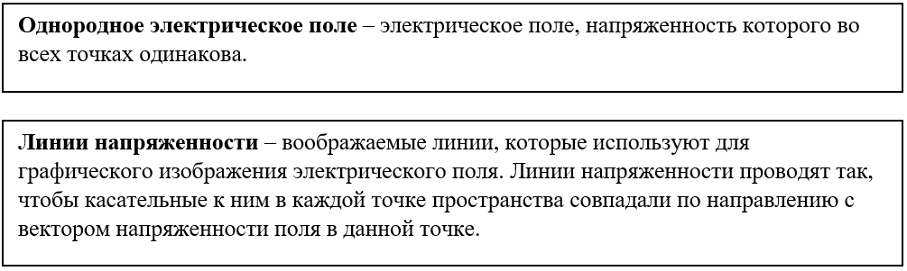
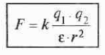
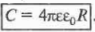

▲
Единица электрического заряда в СИ-кулон ([q] =Кл)
За единицу электрического заряда в СИ принят электрический заряд, проходящий через поперечное сечение проводника при силе тока 1 A за время 1 с.
- Различают два вида электрических зарядов, условно названных положительными и отрицательными. Положительный заряд возникает, например, на стекле, натертом кожей или бумагой, отрицательный - на янтаре или пластмассе, натертых шерстью.
- Тело является электрически нейтральным, если суммарный заряд отрицательно заряженных частиц, входящих в состав тела, равен суммарному заряду положительно заряженных частиц.
- Стабильными носителями электрических зарядов являются элементарные частицы и античастицы. Например, носители положительного заряда- протон и позитрон, а отрицательного- электрон и антипротон.
- Существуют частицы без электрического заряда, но не существует электрического заряда без частицы. Наличие электрического заряда у частиц или тел означает лишь существование определенных силовых взаимодействий между ними. Знание законов этих взаимодействий входит в представления о заряде.
- Электрический заряд дискретен: существует минимальный элементарный электрический заряд, которому кратны все электрические заряды тел.

- Изолированной называют систему, в которую из внешней среды через ее границы не проникают электрически заряженные частицы(тела).
- Из закона сохранения заряда следует, что положительные и отрицательные заряды могут рождаться и уничтожаться в системе только парами, состоящими из одного положительного и одного отрицательного заряда, например, электрон и позитрон. В физических явлениях, в которых не происходит взаимопревращения частиц (например, при электризации тел), закон сохранения заряда можно рассматривать как следствие сохранения числа частиц (происходит перераспределение частиц в пространстве).
Примеры проводников: металлы в твердом и жидком состояниях, ионизированные газы, растворы электролитов.
- Свободными зарядами, существующими в проводниках, являются электроны проводимости в металлах, ионы в газах и растворах электролитов.
Примеры диэлектриков: кварц, янтарь, эбонит, газы в нормальных условиях.
- Связанными являются заряды, входящие в состав атомов и молекул диэлектрика, заряды ионов в кристаллах с ионной решеткой.
- Проявление диэлектрических свойств уменьшается при возрастании температуры.
- Электризация тел- процесс перераспределения электрических зарядов, имеющих в телах, в результате чего тела приобретают заряды противоположных знаков. При электризации заряды не порождаются, а лишь разделяются и перераспределяются между телами; при этом выполняется закон сохранения электрического заряд.
- Различают следующие виды электризации:
- электризация за счет электропроводности. При соприкосновенности двух металлических тел – заряженного и нейтрального- происходит переход некоторого количества свободных электронов с заряженного тела на нейтральное, если заряд тела был отрицательным и наоборот, если заряд тела положителен. В результате этого нейтральное тело приобретает заряд- отрицательный в первом случае, положительный-во втором;
- электризация трением. В результате соприкосновения при трении некоторых нейтральных тел (например, стекла и бумаги, пластмассы и шерсти) электроны переходят от одного тела к другому. Каждом из них нарушается равенство сумм положительных и отрицательных зарядов, вследствие чего тела заряжаются противоположными по знаку и равными по модулю зарядами. Электризация трением является причиной возникновения так называемого «статического электричества», разряды которого можно наблюдать, например, расчесывая волосы пластмассовой расческой или снимая с себя синтетическую рубашку или свитер.
- электризация через влияние. При поднесении заряженного тела к концу нейтрального металлического стержня в стержне происходит нарушение равномерного распределения положительных и отрицательных зарядов. Они перераспределяются так, что в одной части стержня возникает избыточный отрицательный заряд, а в другой – положительный. Эти заряды называются индуцированными. Их появление объясняется движением свободных электронов в металле под действием электрического поля, поднесенного к нему заряженного тела. В целом стержень остается нейтральным, однако если бы его можно было разрезать поперек посередине (см. Рис.), то получилось бы два тела, обладающих равными по модулю и противоположными по знаку зарядами.
Электрическим зарядом также называют электрически заряженное тело.
- Можно сказать, что точечный заряд – это материальная точка, обладающая электрическим зарядом. Практически заряды считают точечными, если размеры тел, на которых они сосредоточены, намного меньше расстояний между телами.
- Заряженные тела взаимодействуют друг с другом: разноименно заряженные притягиваются, одноименно заряженные отталкиваются.
Наэлектризованное тело всегда притягивает ненаэлектризованное.
Взаимодействие между покоящимися точечными зарядами подчиняется закону Кулона.
- Силы взаимодействия направлены вдоль прямой, соединяющей заряды, и являются силами притяжения для разноименных зарядов и отталкивания – для одноименных.
- Закон Кулона справедлив также для заряженных тел шарообразной формы, если их заряды равномерно распределены по всему объему или по всей поверхности шаров. В этом случае под понимают расстояние между геометрическими центрами тел.
- k - коэффициент пропорциональности, зависящий от выбора системы единиц. В СИ он численно равен силе взаимодействия двух точечных зарядов по 1 Кл, находящихся на расстоянии1 м; где k=, гдеε0 -электрическая постоянная (в СИε0=8,8541878*10-12) k=9*109
- Электрические заряды не действуют друг на друга непосредственно. Каждый из них создает в окружающем пространстве электрическое поле. Поле одного заряда действует на другой заряд, и наоборот. По мере удаления от заряда поле ослабевает.
Главным свойством электрического поля является его действие на электрические заряды с некоторой силой.
По действию на заряд устанавливают наличие поля, распределение его в пространстве, изучают все его характеристики.
Электрическое поле неподвижных зарядов называют электростатическим.
- Электростатическое поле создается только электрическими зарядами и не меняется со временем.
- Направление вектора напряженности совпадает с направлением силы, действующей на положительный заряд, помещенный в данную точку поля.
- Напряженность электрического поля в данной точке равна силе, с которой электрическое поле действует на единичный положительный заряд, помещенный в данную точку поля.
- Напряженность является силовой характеристикой электрического поля; она позволяет рассчитать силу действующую на этот заряд: .
Единица напряженности в СИ- вольт на метр
За единицу напряженности электрического поля в СИ принята напряженность однородного электрического поля, при которой между двумя точками находящимися на линии напряженности на расстоянии 1м, создается разность потенциалов 1 в
Через каждую точку поля можно провести только одну линию напряженности, т. иллинии напряженности не пересекаются.

Линии напряженности однородного поля параллельны и их густота постоянно противном случае поле является неоднородным.
Силовые линии электростатического поля не замкнуты: они начинаются на положительных зарядах и заканчиваются на отрицательных. Густота силовых линий характеризует значение вектора напряженности электрического поля.
На рисунке изображены линии напряженности полей: точечного заряда (a) двух одноименных (б) и разноименных (в) точечных зарядов, уединенной бесконечной заряженной плоскости (г), плоского конденсатора (д).- Если электростатическое поле создается несколькими источниками, то его напряженность определяется по принципу суперпозиции полей.
Направлен дипольный момент по оси диполя от его отрицательного заряда к положительному. Единица дипольного момента в СИ принят –кулон -метр ([р]=Кл*м).
За единицу дипольного момента в СИ принят дипольный момент электрического диполя, заряды которого равные по модулю 1Кл расположены на расстоянии 1м один от другого.
Электрическое поле в диэлектриках
- Под действием внешнего электростатического поля свободные заряды (например, в металлическом проводнике –электроны проводимости) перераспределяются так, что напряженность результирующего поля в любой точке проводника равна нулю; нескомпенсированные заряды располагаются неподвижно только на его поверхности.
- Явление перераспределения зарядов в проводнике во внешнем электростатическом поле называется электростатической индукцией. Оно состоит в разделении положительных и отрицательных зарядов, содержащих в нейтральном проводнике в одинаковых количествах.
- Если внутри проводника имеется полость, то в этой полости напряженность электростатического поля равна нулю независимо от того, какое поле имеется вне проводника и как заряжен проводник. На этом основана электростатическая защита: если прибор окружен замкнутой металлической оболочкой (или сеткой), то никакие внешние электростатические поля на этот прибор действовать не будет.
- Линии напряженности всегда перпендикулярны поверхности проводника.
- Различают два вида диэлектриков:
- Полярные состоящие из молекул, у которых центры распределения положительных и отрицательных зарядов не совпадают (электрические диполи), например, спирты, вода:
- Неполярные в молекулах и атомах, которые центры распределения положительных и отрицательных зарядов совпадают, например, инертные газы,
При помещении диэлектриков в электрическом поле происходит процесс поляризации.
- Если поместить полярный диэлектрик во внешнее однородное электрическое поле, то под его действием каждая молекула диэлектрика будет ориентироваться так, чтобы ее дипольный момент был сонаправлен с напряженностью поля. Строгой ориентации дипольных молекул препятствует их тепловое хаотическое движение.
- Если во внешнее поле поместить неполярный диэлектрик, то в его молекулах под действием поля произойдет смещение отрицательных и положительных зарядов относительно друг друга. Молекулы становятся диполями, оси которых ориентированы вдоль поля.
- На поверхностях А и В, ограничивающих полярный и неполярные диэлектрики, возникают нескомпенсированные связанные электрические заряды противоположных знаков, создающие собственное электрическое поле, вектор напряженности которого направлен в сторону, противоположную направлению напряженности внешнего электрического поля.
Поэтому результирующее поле в диэлектрике имеет напряженность E, меньшую, чем в вакууме.
Диэлектрическая проницаемость-величина безразмерная и выражается в безразмерных
единицах.
- Если взаимодействующие заряды находятся в однородном диэлектрике с диэлектрической проницаемостью ε, то сила взаимодействия (сила Кулона) уменьшается в ε раз.
Работа при перемещении заряда в однородном электростатическом поле.
Потенциал. Напряжение.
Пусть однородное электрическое поле создано большими металлическими пластинами, имеющими заряды противоположного знака. Работу, совершаемую полем при перемещении положительного заряда +q из точки 1, находящейся на расстоянии d1 от отрицательно заряженной пластины, в точки 2, расположенную на расстоянии d2, можно определить по формуле: Аэл=qE(d1-d2), где Е –напряженность поля.
- Работа кулоновских сил по замкнутому контуру равна нулю.
- Работа кулоновских сил по перемещению заряда не зависит от длины и формы траектории.
Потенциальная энергия заряда +q, находящегося в однородном поле, созданном двумя заряженными пластинами, на расстоянии d от отрицательно заряженной пластины, равна: Wp=qEd.
- Кулоновские силы являются потенциальными силами , работа кулоновских сил равна изменению потенциальной энергии, взятому с противоположным знаком:
- Aэл= - ∆Wp= -qE( d2-d1).
Непосредственные физический смысл имеет не сам потенциал, а разность потенциалов.
Единица электростатического потенциала в СИ – вольт (φ=В).
За единицу электрического потенциала в СИ принят в данной точке электрического поля, при котором работа по переnмещению положительного заряда 1Кл по любой траектории из данной точки в точку с нулевым потенциалом равна 1Дж.
- Потенциал поля точечного заряда q в точке , находящейся на расстоянии r от заряда ,равен: При qф 0 ,ф0 ; при qф0 , φ<0.
- Потенциальная энергия взаимодействия двух точечных зарядов равна:W= k q1q2/εr.
- В соответствии с принципом суперпозиции полей, если электростатическое поле создается несколькими источниками , то его потенциал φ в данной точке пространства определяется как алгебраическая сумма потенциалов ф1,ф2,ф3 полей создаваемых отдельными точечными зарядами .При этом предполагается одинаковые для всех полей выбор точки ,в которой потенциал принят равным нулю.
Для электростатических полей разность потенциалов совпадает с напряжением U.
Единица разности потенциалов (напряжения) в СИ – вольт ([U]=B).
ЗА единицу разности потенциалов в СИ принята такая разность потенциалов на концах проводника, при которой работа по перемещению положительного электрического заряда 1Кл по этому проводнику равна 1Дж.
- В каждой точке эквипотенциальной поверхности вектор напряженности электрического поля перпендикулярен ей и направлен в сторону убывания потенциала.
- Работа, совершаемая силами электростатического поля при перемещении электрического заряда по эквипотенциальной поверхности, равна нулю.
- Эквипотенциальные поверхности строят так, чтобы разности потенциалов между соседними поверхностями были одинаковы. Зная расположение этих поверхностей, можно построить силовые линии и найти значения напряженности поля, и наоборот.
- Эквипотенциальные поверхности не пересекаются.
- Поверхность заряженного проводника является эквипотенциальной поверхностью.
На рисунке изображены эквипотенциальные поверхности полей: точечного заряда (а), уединенной бесконечной заряженной плоскости (б), плоского конденсатора (в).
Электрическая емкость – величина, характеризующая электрические свойства проводника, количественная мера его способности удерживать электрический заряд.
- Чем больше электрическая емкость, тем больший заряд может накопить проводник при данном потенциале.
- Электрическая емкость определяется геометрическими размерами проводника, его формой и электрическими свойствами окружающей среды ( ее диэлектрической проницаемостью) .
- Электрическая емкость уединенного проводящего шара (или сферы) радиусаR, равна: 
Понятие электрической емкости относится также к системе проводников, в частности двух проводников, разделенных тонким слоем диэлектрика, - конденсатору.
- Сами проводники называются в этом случае обкладками конденсатора.
- В зависимости от конфигурации и расположения обкладок различают плоские, сферические и цилиндрические конденсаторы.
- Электрическая емкость конденсатора равна: ,где q - заряд одной из обкладок ,j1-j2- разность потенциалов между обкладками.
- Электрическую емкость плоского конденсатора, состоящего из двух металлических пластин площадью S каждая, расположенных на расстоянии d друг от друга (d<<√S) и разделённых слоем диэлектрика с диэлектрической проницаемостью e, можно рассчитать по формуле:
Единица электрической емкости в СИ – фарад (С)= Ф).
За единицу электрической емкости в СИ принята электрическая емкость конденсатора, при которой заряд 1 Кл между обкладками конденсатора создает электрическое напряжение 1 В.
- Энергия W заряженного конденсатора определяется соотношением: , где q - заряд обкладок конденсатора, U - разность потенциалов между обкладками. Энергия заряженного конденсатора является энергией созданного им электростатического поля.
- Для того, чтобы обеспечить требуемую емкость при заданном напряжении, конденсаторы соединяют в батареи.
- При параллельном соединении конденсаторов емкостями С1, С2, С3 емкость батареи определяют по формуле: С=С1+С2+С3.
- При последовательном соединении конденсаторов емкость батареи определяют из соотношения:
- При последовательном соединении равны заряды конденсаторов, при параллельном – разность потенциалов между обкладками.